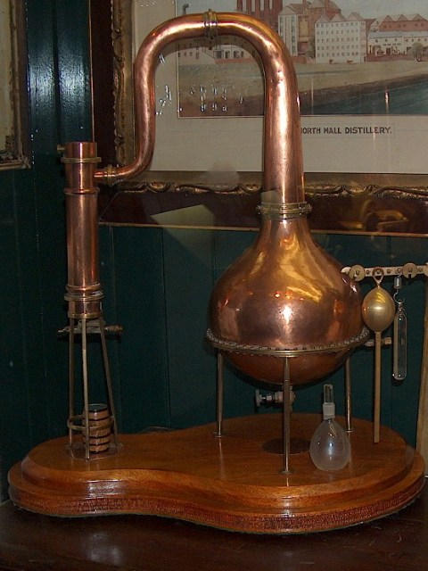

Page 1 of 1
practical advice on pps distillation

Posted:
Thu Oct 28, 2010 2:09 amby Fionnán
So i happen to live in a student co-op in Berkeley that's just approved to finance a pot still building project between a group of friends of mine (including a post-grad chemist and a metallurgist) to distill and age our own house whiskey. It's not too hard for us to get sherry casks from Napa which is just down the road from Berkeley and there're plenty of peat bogs in northern california so we've been drafting plans to make something unique like a peated pps style whiskey (obviously only the malted portion of the mash would be peated.) Any suggestions or tips on the practicalities would be brilliant. cheers
Re: practical advice on pps distillation
Posted:
Thu Oct 28, 2010 9:46 amby JohnM
All I can say is good luck. There's a massive number of ways to make it, but the ratio generally seems to be around 60:40 unmalted:malted barley. I'll buy a bottle of the new make from you when you're finished! If you're willing to part with it...
Re: practical advice on pps distillation
Posted:
Thu Oct 28, 2010 10:15 amby DavidH
Great project! I suggest starting a blog to record deliberations and progress. Those of us living in less enlightened jurisdictions can then participate vicariously.
Re: practical advice on pps distillation
Posted:
Thu Oct 28, 2010 8:24 pmby Fionnán
A blog sounds like an excellent idea David! The big part of the work will happen in December when we dont have school to worry about and we should be distilling by the spring. Also, absolutely John, if all works out, i'd be glad to bring over some new make this summer when i'm back in Dublin. One question i had for all of you though is if there might be a recommended still shape for the pot still if we're looking to make pps whiskey. As we're in the position to control pretty much everything about how we go about this, i'd really like to hear some opinions before we start pounding out the copper. thanks again to all of you!
Re: practical advice on pps distillation
Posted:
Thu Oct 28, 2010 10:50 pmby cathach
Something that might help is a DVD re-enactment of poitín making called Déantús an Phoitín, as its basically unaged whiskey. Have you had a look at it before now?
http://www.youtube.com/watch?v=fT4kyO0FH9Q Opening sequence
http://www.youtube.com/watch?v=V_dHFWUOVzw The Singling
Re: practical advice on pps distillation
Posted:
Fri Oct 29, 2010 12:22 amby Fionnán
hey Cathach, by chance i already have a copy of the same DVD. Its been tremendously helpful although some of the tools displayed are obviously different and we're looking to make a more permanent still structure
Re: practical advice on pps distillation
Posted:
Fri Oct 29, 2010 2:26 amby Fionnán
Re: practical advice on pps distillation
Posted:
Fri Oct 29, 2010 8:31 amby IrishWhiskeyChaser
Just to Let you know Fionnán, from what I have seen, the Irish pot still has traditionally been the onion shape with a smooth tapering neck.
Re: practical advice on pps distillation
Posted:
Fri Oct 29, 2010 9:55 amby JohnM
Maybe a smaller version of this -
http://upload.wikimedia.org/wikipedia/c ... l_Cork.jpgAlthough when stills get smaller, things change. Or you could go for something like Kilbeggan has, if you're using a small still. They got this from the Tullamore distillery, although I don't know what it was used for there -
http://www2.irishwhiskeynotes.com/images/kilbeggan.jpg
Re: practical advice on pps distillation
Posted:
Fri Oct 29, 2010 10:14 amby DavidH
JohnM wrote:They got this from the Tullamore distillery, although I don't know what it was used for there
Distilling water, according to Brian Quinn.
Re: practical advice on pps distillation
Posted:
Fri Oct 29, 2010 11:06 amby IrishWhiskeyChaser
I've moved this to the Whiskey section as after all we are talking about distilling whiskey
Here is a pic of the Test still in midleton ... nick named Mickey's Bell

And a display moddle of a still from the Visitor centre

- Mickey's Bell
- MickeysBellII.jpg (60.81 KiB) Viewed 1841 times
- 
- MiniatureStill.jpg (89.77 KiB) Viewed 1841 times
Re: practical advice on pps distillation
Posted:
Fri Oct 29, 2010 11:25 amby JohnM
DavidH wrote:JohnM wrote:They got this from the Tullamore distillery, although I don't know what it was used for there
Distilling water, according to Brian Quinn.
I prefer it's current use, so.
Re: practical advice on pps distillation
Posted:
Fri Oct 29, 2010 11:27 pmby Fionnán
so, just to keep everyone updated, we're drawing up a rough draft of the still proportions today to start ordering the copper. It's basically going to be a kind of boxed onion with a wide neck. kind of like an upside down version of the small kilbeggan pot with a wide tapering onion neck instead of a pipe neck. The pot'll have roughly a 20 gallon capacity and we're thinking of making the neck about the same length of the pot itself. Out of curiosity how much wash would you recommend putting per run into to a pot still of about 20 gallon volume?
{kind=link}
{kind=link}